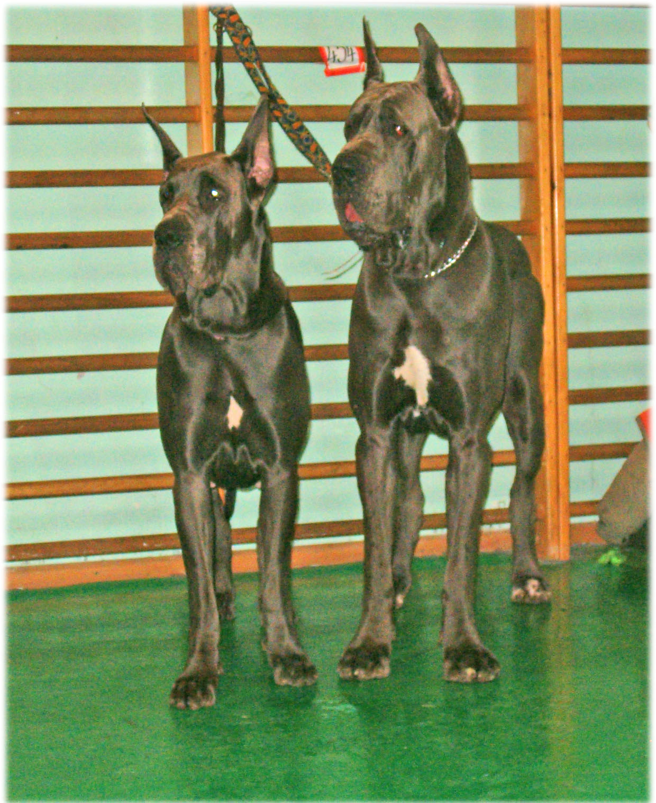

International dog show in Kielce
OUT OF LAW BILLY THE KID - CWC, Res.Cacib - finished Polish Championship
NO DOUBT - CWC, CACIB, BOB - So we finished this show season in very good mood.
 15.11.2006 - The last litter in this year. VENDETTA delivered her puppies this
morning. In litter "F" we have 4 males and only one female. Pups have got
very interesting pedigree.
15.11.2006 - The last litter in this year. VENDETTA delivered her puppies this
morning. In litter "F" we have 4 males and only one female. Pups have got
very interesting pedigree.
11.11.2006 - World Dog Show in Poznañ :
FOR PLEASURE - ex.
QUIXOTE - II ex.
NOVEMBER RAIN Balao - who is living in Perfect Dog kennel also got silver medal in his class.

30.09.2006 - 01.10.2006 International dog show in Tulln the most important show in Austria - Bundessieger 2006.On Saturday Jack Russell Terriers were showed
FOR PLEASURE - CAC
On Sunday Danes were judged by dr. Gerard Mignot
QUIXOTE - CAC, CACIB = Bundessieger
OH MY DARLING - CAC, CACIB = Bundessieger i BOB !!!
It was really wonderfull weekend.
 24.09.2006 - International dog show in Wroc³aw:
24.09.2006 - International dog show in Wroc³aw:QUIXOTE - CWC, CACIB
17.09.2006 - Great Danes Club show in £ódŸ, all our Danes got excellent notes:
QUIXOTE - I ex., CWC
OH MY DARLING - II ex.
NO DOUBT - III ex.
10.09.2006 - International dog show in Kecskemet:
FOR PLEASURE - CAC, CACIB, BOB
NO DOUBT - CAC, CACIB
QUIXOTE - CAC, CACIB, BOB - finished Hungarian Championship
09.09.2006 - International dog show in Kecskemet:
FOR PLEASURE - CAC, CACIB
 27.08.2006 - National dog show in Radom -
27.08.2006 - National dog show in Radom - NO DOUBT - CWC, BOS, BOB
06.08.2006 - Terrier Club Show - FOR PLEASURE of the Hunters Pride - CAC, BOS, BOB - CLUB WINNER'06
05.08.2006 - International Dog Show in Vilnius - FOR PLEASURE of the Hunters Pride - CAC, CACIB BOB
 30.07.2006 - Litter "E" BALAO was born -we have 4 males and 1 female.
30.07.2006 - Litter "E" BALAO was born -we have 4 males and 1 female.30.07.2006 - National Dog Show in Bêdzin - NO DOUBT got CWC, BOS, BOB.
22.07.2006 - International Dog Show in Shombathely:
QUIXOTE - CAC, CACIB, BOB
NO DOUBT - CAC, CACIB
OH MY DARLING - CAC, Res.CACIB - she had finished Hungarian championship.
 18.07.2006 - Litter "D" BALAO was born -we have 2 males and 3 females
18.07.2006 - Litter "D" BALAO was born -we have 2 males and 3 females
08.07.2006 - International Dog Show in Warszawa - OUT OF LAW BILLY THE KID - CWC, BOS, CACIB
24.06.2006 - International Dog Show in Kraków - QUIXOTE - CWC, Res.CACIB. and finished Polish Championship.
 02.05.2006 - First litter in this year. In litter "C" BALAO we have got 4
males and 2 females.
02.05.2006 - First litter in this year. In litter "C" BALAO we have got 4
males and 2 females.
 23.04.2006 - National
Dog Show in Lublinie - NO DOUBT Balao - Junior Winner and First
place BIS Junior II grup. OUT OF LAW BILLY THE KID - CAC, BOS, BOB.
23.04.2006 - National
Dog Show in Lublinie - NO DOUBT Balao - Junior Winner and First
place BIS Junior II grup. OUT OF LAW BILLY THE KID - CAC, BOS, BOB.
08.04.2006 - National Dog Show in Nowy Dwór Mazowiecki OH MY DARILNG got CWC, BOS, BOB and finished Polish Championship
 11 - 12.03.2006 - International dog shows in Vilnius. Second day was more
lucky for us. OH MY DARLING Balao - CAC, CACIB and she finished Lithuanian
championship and INTERCHAMPIONSHIP !!
11 - 12.03.2006 - International dog shows in Vilnius. Second day was more
lucky for us. OH MY DARLING Balao - CAC, CACIB and she finished Lithuanian
championship and INTERCHAMPIONSHIP !!QUIXOTE - 2 x CAC and 2x Res.CACIB.
 13.02.2006 - We welcome HEROINA vom Hous Tchorz, pet name NANA.
13.02.2006 - We welcome HEROINA vom Hous Tchorz, pet name NANA.